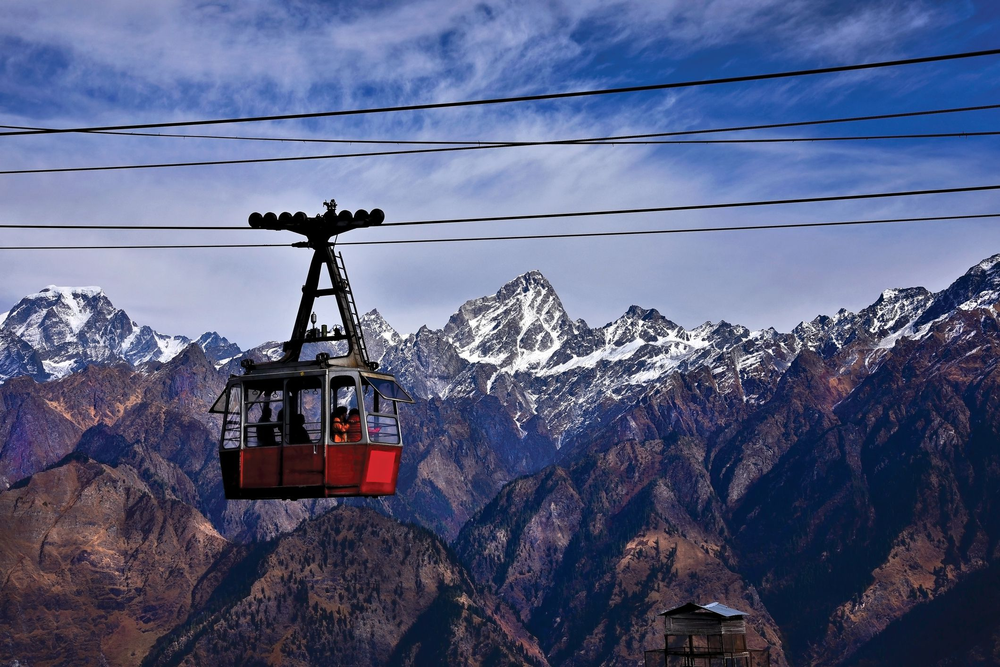
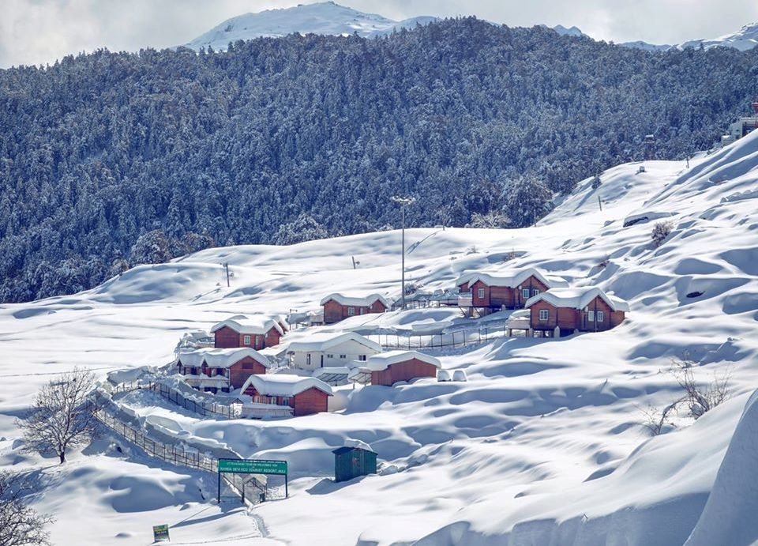
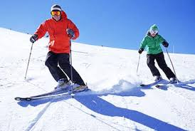

Auli is a famous hill station popularly known as ski resort of India known for its snowy
slopes. Besides natural charm and unparalleled beauty, Auli is known for its unlimited adventure opportunities.
Auli is fondly referred to as a place where nature comes alive in all its glory and splendour.
How to reach there?
Auli is located in Chamoli district in Himalayan mountains of Uttarakhand. The nearest airport to
Auli is Jolly Grant Airport in Dehradun and the nearest railway station is Rishikesh railway station which is
approximately 250kms away.
Top things to do?
If you are searching for hiking and ski destination, this is the perfect place.
The slopes are intended for both professional skiers and novices.
Even a small Hindu temple connected with the Hindu epic the Ramayana is present.
You can even enjoy a tour of famous Auli ropeway and visit Joshimath and other small hill stations.


